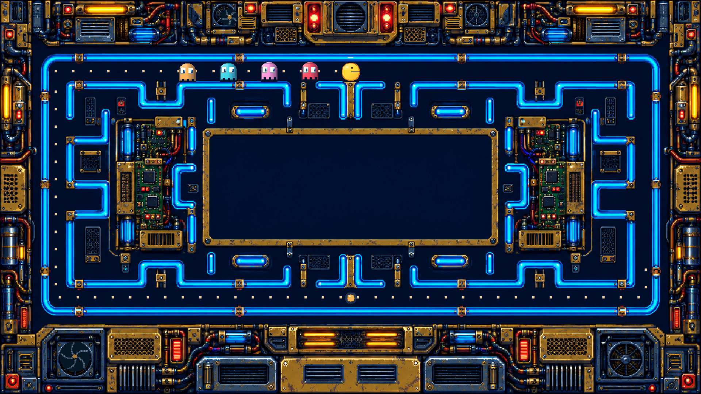

DesignsMediaThemesTemplatesBRB
Pac-Man Maze
Theme assets · a transparent frame for your OBS scene
THEME DOWNLOADS
OBS background border

The original artwork stays the same size
The center is cut away. A wider border keeps more artwork; a thinner border gives your content more room.
One concept for review. The slider changes only this export; your theme, scene layouts and broadcast stay untouched.